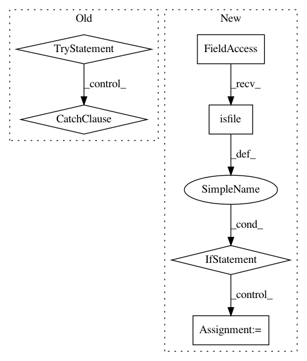

689a05c6590aa7ddd0dcb6cbfd83d9c7fc152adc,src/python/pants/backend/android/distribution/android_distribution.py,AndroidDistribution,register_android_tool,#AndroidDistribution#Any#,70
Before Change
:param string tool_path: Path to tool, relative to the Android SDK root, e.g
"platforms/android-19/android.jar".
try:
android_tool = os.path.join(self._sdk_path, tool_path)
except:
raise AndroidDistribution.Error("Failed to locate Android SDK. Please install SDK and "
"set ANDROID_HOME in your path")
self._register_file(android_tool)
return android_tool
def _register_file(self, tool):
After Change
if tool_path not in self._validated_tools:
android_tool = os.path.join(self._sdk_path, tool_path)
if os.path.isfile(android_tool):
// Use entire relative path as a key since the SDK usually has multiple copies of each tool.
self._validated_tools[tool_path] = android_tool
else:
raise self.DistributionError("There is no {} installed. The Android SDK may need to be "
"updated.".format(android_tool))
return self._validated_tools[tool_path]
def __repr__(self):
return "AndroidDistribution({})".format(self._sdk_path)
In pattern: SUPERPATTERN
Frequency: 3
Non-data size: 6
Instances
Project Name: pantsbuild/pants
Commit Name: 689a05c6590aa7ddd0dcb6cbfd83d9c7fc152adc
Time: 2015-03-05
Author: mateorod9@gmail.com
File Name: src/python/pants/backend/android/distribution/android_distribution.py
Class Name: AndroidDistribution
Method Name: register_android_tool
Project Name: lingpy/lingpy
Commit Name: 58ab225e313cde281696aca8bdfaff26695d879a
Time: 2013-07-17
Author: mattis.list@posteo.de
File Name: lingpy/data/model.py
Class Name: Model
Method Name: __init__
Project Name: lingpy/lingpy
Commit Name: a89243ff7c4182e10007f2889ceb543d9f26640b
Time: 2013-07-01
Author: mattis.list@posteo.de
File Name: lingpy/read/phylip.py
Class Name:
Method Name: read_dst